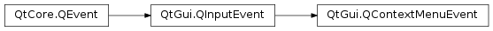

Qt Documentation
QContextMenuEvent¶
Synopsis¶
Detailed Description¶
The
PySide2.QtGui.QContextMenuEventclass contains parameters that describe a context menu event.Context menu events are sent to widgets when a user performs an action associated with opening a context menu. The actions required to open context menus vary between platforms; for example, on Windows, pressing the menu button or clicking the right mouse button will cause this event to be sent.
When this event occurs it is customary to show a
PySide2.QtWidgets.QMenuwith a context menu, if this is relevant to the context.Context menu events contain a special accept flag that indicates whether the receiver accepted the event. If the event handler does not accept the event then, if possible, whatever triggered the event will be handled as a regular input event.
-
class
PySide2.QtGui.QContextMenuEvent(reason, pos)¶ -
class
PySide2.QtGui.QContextMenuEvent(reason, pos, globalPos) -
class
PySide2.QtGui.QContextMenuEvent(reason, pos, globalPos, modifiers) Parameters: - globalPos –
PySide2.QtCore.QPoint - pos –
PySide2.QtCore.QPoint - modifiers –
PySide2.QtCore.Qt.KeyboardModifiers - reason –
PySide2.QtGui.QContextMenuEvent.Reason
Constructs a context menu event object with the accept parameter flag set to false.
The
reasonparameter must beQContextMenuEvent.MouseorQContextMenuEvent.Keyboard.The
posparameter specifies the mouse position relative to the receiving widget.The
PySide2.QtGui.QContextMenuEvent.globalPos()is initialized toQCursor.pos(), which may not be appropriate. Use the other constructor to specify the global position explicitly.Constructs a context menu event object with the accept parameter flag set to false.
The
reasonparameter must beQContextMenuEvent.MouseorQContextMenuEvent.Keyboard.The
posparameter specifies the mouse position relative to the receiving widget.globalPosis the mouse position in absolute coordinates.Constructs a context menu event object with the accept parameter flag set to false.
The
reasonparameter must beQContextMenuEvent.MouseorQContextMenuEvent.Keyboard.The
posparameter specifies the mouse position relative to the receiving widget.globalPosis the mouse position in absolute coordinates. Themodifiersholds the keyboard modifiers.- globalPos –
-
PySide2.QtGui.QContextMenuEvent.Reason¶ This enum describes the reason why the event was sent.
Constant Description QContextMenuEvent.Mouse The mouse caused the event to be sent. Normally this means the right mouse button was clicked, but this is platform dependent. QContextMenuEvent.Keyboard The keyboard caused this event to be sent. On Windows, this means the menu button was pressed. QContextMenuEvent.Other The event was sent by some other means (i.e. not by the mouse or keyboard).
-
PySide2.QtGui.QContextMenuEvent.globalPos()¶ Return type: PySide2.QtCore.QPointReturns the global position of the mouse pointer at the time of the event.
-
PySide2.QtGui.QContextMenuEvent.globalX()¶ Return type: PySide2.QtCore.intReturns the global x position of the mouse pointer at the time of the event.
-
PySide2.QtGui.QContextMenuEvent.globalY()¶ Return type: PySide2.QtCore.intReturns the global y position of the mouse pointer at the time of the event.
-
PySide2.QtGui.QContextMenuEvent.pos()¶ Return type: PySide2.QtCore.QPointReturns the position of the mouse pointer relative to the widget that received the event.
-
PySide2.QtGui.QContextMenuEvent.reason()¶ Return type: PySide2.QtGui.QContextMenuEvent.ReasonReturns the reason for this context event.
-
PySide2.QtGui.QContextMenuEvent.x()¶ Return type: PySide2.QtCore.intReturns the x position of the mouse pointer, relative to the widget that received the event.
-
PySide2.QtGui.QContextMenuEvent.y()¶ Return type: PySide2.QtCore.intReturns the y position of the mouse pointer, relative to the widget that received the event.
© 2018 The Qt Company Ltd. Documentation contributions included herein are the copyrights of their respective owners. The documentation provided herein is licensed under the terms of the GNU Free Documentation License version 1.3 as published by the Free Software Foundation. Qt and respective logos are trademarks of The Qt Company Ltd. in Finland and/or other countries worldwide. All other trademarks are property of their respective owners.